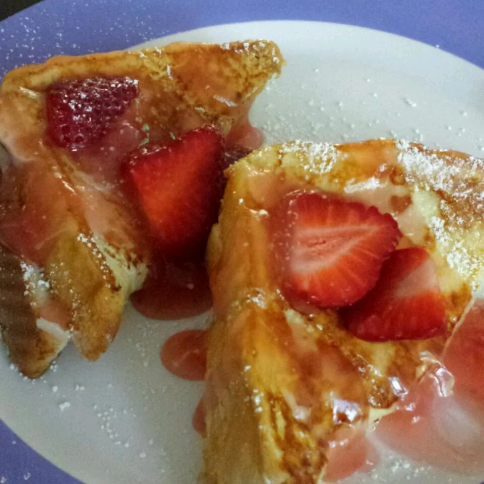

French Toast
Back
Description

French toast topped with glazed strawberries and stuffed with cheesecake.
Soooo good and original. Perfect to impress at a brunch.
Serve with mimosas for a fancier brunch-type setting,
or just make it for a special Saturday morning breakfast for your family like I do.
Ingredients
- 1 cup mashed fresh strawberries
- 1/2 cup white sugar
- 2 tablespoons cornstarch
- 1 cup water
- 1 cup milk
- 6 eggs
- 1 package cream cheese, softened
- 1 teaspoon vanilla extract
- 3/4 cup white sugar
- 8 slices bread, cut in half diagonally
- 1 teaspoon butter
- 8 sliced fresh strawberries
- 1 tablespoon confectioners' sugar for dusting
- 1 cup whipped cream
Steps
- Step 1: Preheat an oven to 100 degrees F ( 40 degrees C).
- Step 2: Heat mashed strawberries and 1/2 cup white sugar in a saucepan over medium heat.
- Step 3: Mix cornstarch and water together in a bowl, then stir into the strawberries.
- Step 4: Cook and stir until thickened, about 5 minutes. Reduce heat to low and simmer
while preparing remaining ingredients, stirring occasionally.
- Step 5: Whisk together the milk and eggs in a bowl; set aside.
- Step 6: Mash cream cheese, vanilla extract, and 3/4 cup white sugar in a bowl until smooth.
- Step 7: Spread the cream cheese mixture over a triangle-shaped piece of bread,
and top with another piece. Repeat with remaining bread and cream cheese mixture to make 8 triangle-shaped sandwiches.
- Step 8: Heat butter in a large skillet over medium heat.
- Step 9: Dip the sandwiches into the egg mixture, 2 or 3 at a time, and place in the skillet.
- Step 10: Cook until golden brown on both sides, about 3 minutes per side.
- Step 11: Transfer pan-fried sandwiches to a baking sheet and place in the preheated
oven to keep warm while cooking remaining sandwiches.
- Step 12: To serve, top French toast with warm strawberry glaze and sliced fresh strawberries
and sprinkle with confectioners' sugar. Serve with a dollop of whipped cream.
Back